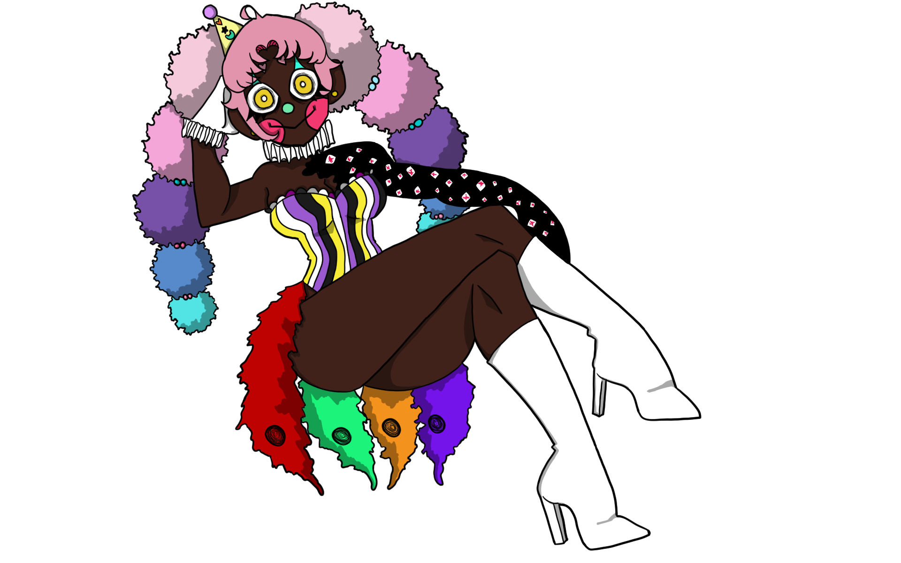
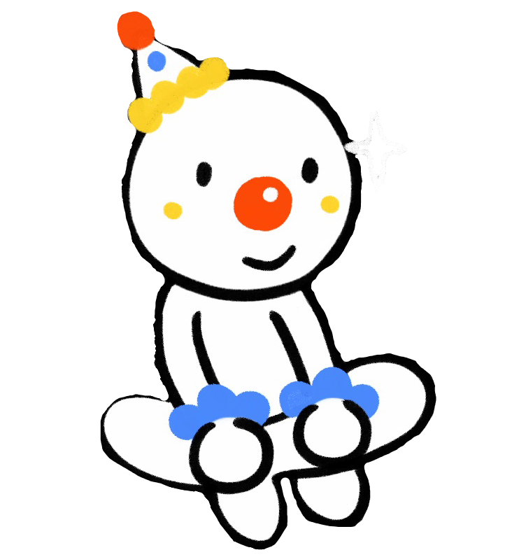

Other Clowns...
Pucca is another small clown content creator on Twitch. They have 140 followers and are still expanding. They are a talented artist and are known to sometimes host art-related streams where one can watch their work in progress. They have been streaming many games from Devil May Cry to Unpacking. A busy bee, they usually stream on weekends so that way they can fully dedicate themself to their dayjob. Pucca is a talented phone technition and repairs broken celluar devices for clients.
Pucca!
Neo is a spectacular performer. They are a small comfort streamer and have been streaming since November of 2022. They have over 230 followers and are eager to entertain and stream as often as their schedule allows. Neo's content strives to bring peace and love to whoever may watch. They do so by playing comfort games such as Placid Plastic Duck Simulator, quietly drawing, and sharing with the world their talent.
NEOEVA122!